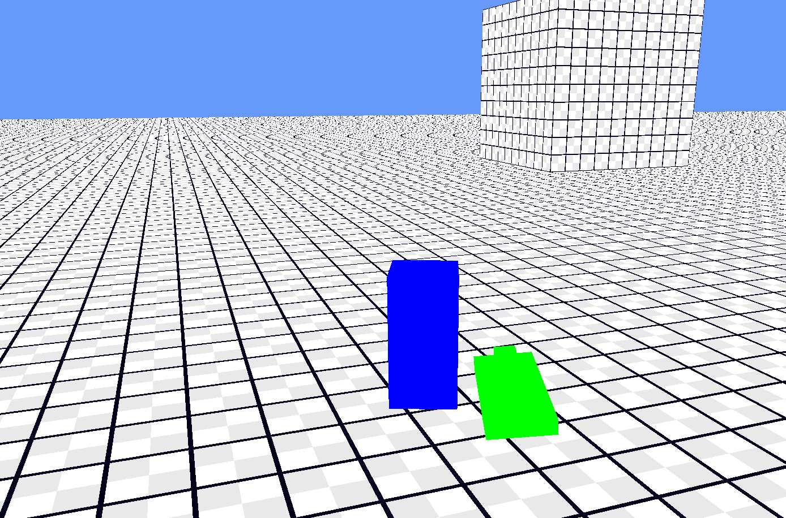

Projet unity (interrompu)
Ce projet a débuté au début du mois de septembre 2024, et j'y ai travaillé dès que possible pendant environ 3 à 4 mois.
L'objectif était de développer un moteur de jeu voxel permettant aux joueurs de concevoir leur propre jeu à l'aide d'un système personnalisé basé sur des "Nodes".
Le moteur aurait inclus des éditeurs intégrés pour créer des blocs, des arbres, des terrains, des monstres, des structures, etc. L'idée était de donner aux joueurs la liberté de créer de vastes paysages, qu'il s'agisse de terrains complexes générés de manière procédurale ou de villes flottant dans le ciel. Le but était d'offrir aux joueurs la possibilité de construire et de partager leurs mondes uniques avec leurs amis, tout en encourageant la créativité et la collaboration.
Avec ce type de création de mondes, le joueur aurait pu créer et explorer son propre monde sans s'ennuyer. En cas d'ennui, il lui aurait suffi de télécharger les « WorldPacks » créés par d'autres joueurs !

Projet moteur de jeu (en cours)
Le projet de moteur de jeu a débuté après que j'ai arrêté de travailler sérieusement sur le projet Unity. Pourquoi ? Parce que je trouvais que je m'appuyais trop sur un moteur de jeu déjà existant, et je voulais étendre mes horizons en créant mon propre moteur de jeu, avec succès !
Tout d'abord, il faut savoir que le but de ce projet n'est pas de recréer un tout nouveau jeu, mais de transférer mon projet Unity vers un projet avec mon propre moteur de jeu.
Ce processus a requis énormément de connaissances dans le domaine de la 3D et des shaders, utilisés pour afficher des objets à l'écran. Il m'a donc fallu apprendre à utiliser le .NET Framework ainsi que le package OpenTK, qui est une version d'OpenGL écrite en C# au lieu de C++, et qui est responsable de l'affichage.
Avancées
Actuellement, le 12 janvier 2024 et après 1 mois et demi de travail, le projet fait environ 11 000 lignes de code et a reçu une quantité énorme de fonctionnalités, telles que :
- Un système de UI pour afficher des informations à l'écran.
- Un système de génération de terrain voxel, similaire à celui montré sur l’image ci-dessus.
- Un script de joueur pour pouvoir parcourir le monde.
- Un système de modélisation 3D permettant de créer des objets (comme des épées, par exemple), bien que ce système ne soit pas encore totalement fonctionnel.
- Un système d'animation permettant d'animer les objets créés avec le modeleur 3D. (en cours de développement)
- Un éditeur de UI permettant de créer des interfaces directement dans le jeu, sans avoir à écrire de code très spécifique. Ces éléments sont maintenant sauvegardés dans un format spécial, tout comme les modèles 3D.
Je tiens à préciser que tout ce qui est affichage, à part la base de OpenTK pour afficher les modèles 3D, tout le reste a été codé par moi-même sans utiliser différents packages pour me faciliter la tâche. Pour le UI, il m'a fallu de nombreuses journées sans repos pour apprendre les shaders, l’affichage de différentes façons, la gestion de textures, pour enfin avoir un système presque optimisé.
Pour le modélisateur, j’ai pris inspiration de Blender, un outil très utilisé dans l’industrie. Au lieu de créer un système d’importation, j’ai décidé de créer tout moi-même, ce qui, en fin de compte, n’est pas la meilleure solution, mais qui m’a quand même fait apprendre plein de choses sur le code.